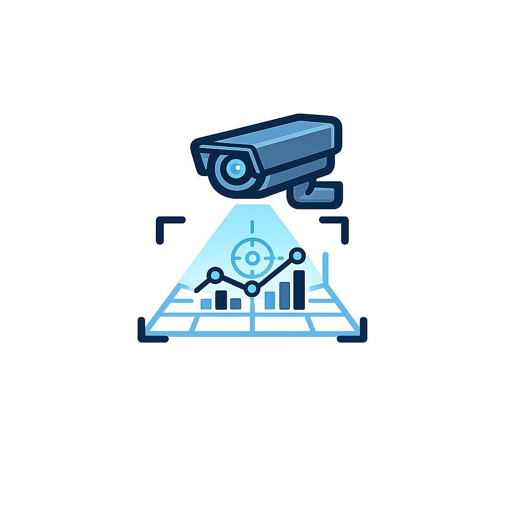

Commercial Security Systems & Video Surveillance
Commercial security solutions for businesses, schools, government facilities, property managers, construction sites, and commercial properties throughout New Mexico and the Four Corners region.

Commercial Security Solutions
Southwest Security & Automation provides commercial security systems, video surveillance, access control, alarm systems, remote monitoring, and AI-supported security planning for organizations that need practical protection without unnecessary complexity.
Every property has different risks, traffic patterns, entry points, and operating hours. Our approach focuses on understanding the site, designing useful coverage, installing cleanly, and supporting the system so it stays reliable after installation.
Commercial Services
-
 Video Surveillance for offices, retail spaces, warehouses, campuses, managed properties, and exterior coverage points
Video Surveillance for offices, retail spaces, warehouses, campuses, managed properties, and exterior coverage points
-
 Access Control for doors, gates, employee areas, restricted spaces, and controlled entry points
Access Control for doors, gates, employee areas, restricted spaces, and controlled entry points
-
 Commercial Alarm Systems planned around the layout, daily operations, and risk profile of the property
Commercial Alarm Systems planned around the layout, daily operations, and risk profile of the property
-
 Remote Monitoring options for better visibility after hours, across multiple locations, and at key access points
Remote Monitoring options for better visibility after hours, across multiple locations, and at key access points
-

AI Video Analytics for smarter alerts, better detection, and future-ready security planning -
 Security Assessments to identify coverage gaps, prioritize improvements, and plan practical upgrades
Security Assessments to identify coverage gaps, prioritize improvements, and plan practical upgrades
Markets We Serve
-
 Commercial Buildings including offices, service businesses, professional spaces, and mixed-use properties
Commercial Buildings including offices, service businesses, professional spaces, and mixed-use properties
-
 Schools & Campuses that need clear visibility, controlled access, and practical security planning
Schools & Campuses that need clear visibility, controlled access, and practical security planning
-
 Government Facilities with public access points, staff areas, parking areas, and controlled spaces
Government Facilities with public access points, staff areas, parking areas, and controlled spaces
-
 Construction Sites that need temporary or ongoing visibility for materials, equipment, and access points
Construction Sites that need temporary or ongoing visibility for materials, equipment, and access points
-
 Warehouses & Industrial Properties with loading areas, inventory zones, gates, yards, and employee access points
Warehouses & Industrial Properties with loading areas, inventory zones, gates, yards, and employee access points
-
 Retail Businesses that need camera coverage, entry protection, staff visibility, and after-hours monitoring options
Retail Businesses that need camera coverage, entry protection, staff visibility, and after-hours monitoring options
-
Multi-Family Properties including shared entries, parking areas, leasing offices, common spaces, and managed buildings
Security Planning & Support
A strong commercial security system starts with the property layout, not a generic equipment list. We look at entrances, public areas, staff-only spaces, parking lots, gates, blind spots, network needs, and how the system will be used day to day.
From there, we can help plan practical camera placement, access control points, alarm coverage, low-voltage wiring needs, monitoring options, and future expansion. The goal is a system that is useful, understandable, and built around how the property actually operates.
Residential Security
Looking for home security systems, cameras, smart locks, or ADT installation?
View Residential Security Services
Contact
Call or Text: 505-331-7834
Email: joe@swsa.ai
Serving commercial properties throughout New Mexico and the Four Corners region.